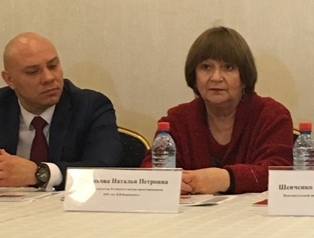
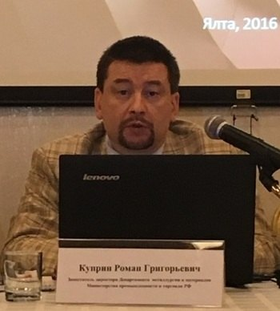
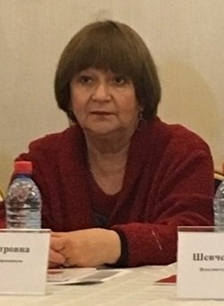

Круглый стол «Проблемы снабжения Крыма строительными материалами и пути решения»
Куприн Роман Григорьевич, зам директора Департамента металлургии и материалов Министерства промышленности и торговли России

Спикеры:
Куприн Роман Григорьевич,
зам директора Департамента металлургии и материалов Министерства промышленности и торговли России
Рогозенко Валентина Михайловна,
заместитель начальника управления мониторинга строительства объектов, экономического анализа и промышленности строительства Министерства строительства и архитектуры Республики Крым
Шевченко Николай Николаевич,
исполнительный директор Союза строителей республики Крым
Старикова Наталья Петрововна,
лауреат Государственной премии, архитектор-консультант отдела планировки и застройки ялтинского филиала Института КрымНИИпроект, ведущий архитектор Ялтинского центра проектирования Крымского федерального университета, член градостроительного совета Ялты
В работе круглого стола принял участие директор компании ЭКСПО-Крым, Организатор выставки СтройЭкспоКрым Семерецкий Сергей Михайлович
Выступления:
Рогозенко Валентина Михайловна,
заместитель начальника управления мониторинга строительства объектов, экономического анализа и промышленности строительства Министерства строительства и архитектуры Республики Крым
На территории республики Крым осуществляется реализация государственной программы развития строительной отрасли республики Крым на 2015-2017 годы. Она предусматривает реализацию мероприятий федеральных целевых программ и государственных программ Российской Федерации. Эта программа разработана с целью стимулирования развития жилищного строительства , формирование перспективных планов благоустроительного развития территорий , создание безопасных условий для проживания населения, развития производства местных строительных материалов для удовлетворения потребностей спроса на внутреннем рынке, также инженерная защита объектов на территории республики Крым от оползней и абразии.
Программа включает в себя пять подпрограмм это:
- создание условий для обеспечения доступным жильем жителей республики
- развитие градостроительства Республики Крым
- повышение устойчивости жилых домов, основных объектов и систем жизнеобеспечения в сейсмических районах Республики Крым
- развитие промышленности строительных материалов
- инженерная защита территории республики от оползневых и абразионных процессов.
Подпрограмма развития промышленности строительных материалов специально создана для того, чтобы помочь нашему региону в производстве строительных материалов.
На сегодняшнем круглом столе мы предлагаем обсудить вопросы снабжения Крыма строительными материалами.
Промышленность строительных материалов на территории республики Крым на данный момент не может в полном объеме обеспечить потребности строительной отрасли республики без ввоза товара из других регионов Российской Федерации.
Базовыми направлениями промышленности строительных материалов республики Крым является цементная и добывающая отрасль, однако местное производство основных строительных материалов также не удовлетворяет спрос на территории республики Крым.
Цена строительных материалов в отличие от других регионов Российской федерации значительно выше за счет логистических затрат. В связи с транспортно-логистическими проблемами периодически возникает дефицит на те или иные строительные материалы. Решение проблемы дефицита возможно за счет расширения производственных мощностей местных предприятий промышленности строительных материалов и
оптимизации процессов логистики.
Необходим анализ всех транспортных маршрутов, по которым перемещаются грузы, исследование транспортных развязок, промежуточных мест перевалки груза, увеличение объема добычи и производства местных строительных материалов с целью импортозамещения, внедрение новых инновационных технологий производства строительных материалов на основе ресурса энергосберегающих технологий, обеспечивающих выпуск высококачественной конкурентоспособной продукции, создание новых ресурсосберегающих экономически эффективных и экологически безопасных производств строительных материалов для производства новых строительных материалов ранее не производимых на территории республики Крым.
Еще одним путем решения проблемы доставки строительных материалов является разработка наиболее оптимальных и экономически выгодных логистических схем поставки строительных материалов в республику Крым.
Министерством строительства и архитектуры вместе с министерствами транспорта республики Крым произведен расчет оптимальных тарифов на поставку строительных материалов в республику. Доставка грузов автомобильным транспортом получилась наиболее затратная, наиболее оптимальным оказались железно-дорожный и морской транспорт.
Нашим министерством создано Государственное унитарное предприятие «Центр комплексного снабжения строительных объектов» для решения проблемы дефицита строй материалов. Целью его деятельности является налаживание надежного непрерывного материального потока для обеспечения бесперебойного функционирования строительных организаций поддержания на нормативном уровне запасов материальных ресурсов строительных материалов и оборудования на основе договоренности о минимальной общей стоимости их хранения и доставки.
За ГУПом закреплены обьекты недвижимости: промышленные базы с подьездными путями в Красногвардейском, Нижнегорском, Советском, Кировском и Ленинском районе, т. е. ими покрыли весь Крым. Территориальное размещение промышленных площадок позволяет охватить все регионы республики, это поможет решить проблему доставки материалов на строительные обьекты в нужном объеме по минимальным ценам.
Куприн Роман Григорьевич,
зам директора Департамента металлургии и материалов Министерства промышленности и торговли России

С 2015 г. полномочия по выработке политики в области промышленности строительных материалов на федеральном уровне были переданы от министерства строительства в министерство промышленности и торговли Российской Федерации. Для нашего министерства это было новое направление, тем не менее промышленная политика всегда определялась Минпромторгом, поэтому логика передачи производства строительных материалов в министерство промышленности безусловно была, при этом стоит сказать, что в советское время вопросами промышленности строительных материалов занималось специально созданное министерство.
Было решено для увеличения компетенции создать научно-технический совет, который занимался бы вопросами развития промышленности строительных материалов,
также была создана межведомственная рабочая группа в которой предполагается изучать и обсуждать вопрос межведомственного взаимодействия в области промышленности строительных материалов.
Научно-технический совет составляют 22 экспертные группы, 12 из них – отраслевые, которые отвечают за сгруппированные строительные материалы, и 10 из них тематические (межотрослевые), т е по тем вопросам которые интересуют всех производителей строительных материалов.
Задача этих групп подготовить и выявить проблематику отрасли промышленности строительных материалов и в своей части предложить пути решения, которые выносятся для принятия конкретных решений на научно-технический совет.
Одним из первых опытов работы этих органов была разработка стратегии промышленности строительных материалов, которую завершили в декабре прошлого года и в настоящий момент она проходит стадии согласования органов исполнительной власти так что в ближайшее время мы сможем утвердить её на правительственном уровне.
Цель стратегии – формирование высокотехнологичной конкурентноспособной инновационной промышленности строительных материалов, обеспечивающей
внутренний и внешний рынок качественной и доступной продукции.
Стратегия должна решить несколько важных задач, одна из которых это рациональное размещение предприятий, производящих строительные материалы. После вступления промышленности строительных материалов в конкурентную фазу рыночных отношений было прекращено планирование отрасли, в результате новые производства создавались хаотично без планирования будущего спроса. В тех регионах, в которых пусто, приходится строительные материалы везти издалека, что значительно увеличивает стоимость материалов, а в тех, в которых избыток, происходит перепроизводство и снижение цен. Как результат производители строительных материалов не могут достичь рентабельной окупаемости, в связи с чем разработана программа стратегического развития отрасли этой индустрии, включающая 3 этапа.
1 этап: Сохранения потенциала отрасли
Задача: не растерять то, что успели наработать, одновременно с этим предполагается переход от количественных показателей к качественным. На сегодняшний момент по мощностям и потенциалу отечественное производство строительных материалов может покрыть спекулятивный спрос строительных материалов до 2020 года, а некоторые до 2030 года. На данный момент по строительным материалам имеется большое количество технологических разработок, соответственно очень низкий уровень импортозависимости строительных материалов.
2 этап: Развитие отечественных технологий
Мы планируем развивать отечественные строительные технологии таким образом, чтобы они могли удовлетворить качественные потребности отрасли.
3 этап: Развитие экспортного потенциала
Отрасль промышленности строительных материалов должна стать экспортно-ориентированной. В настоящий момент мы обладаем достаточно высоким экспортным потенциалом по ряду строительных материалов, это в первую очередь бетонные строительные материалы и кровельное стекло. Если ещё несколько лет назад мы ввозили до 35 % строительного стекла из-за рубежа, то сейчас у нас показатель менее 5 %, а сама страна стала надэкспортером строительного стекла. Для того чтобы повысить эффективность отрасли, у нас предполагается провести ряд мер поддержки. За более подробной информацией предлагаю обратиться на портал пром-монитор.рф
Вопросы :
Макаренко Андрей Васильевич,
вице-президент групп компаний «Славянский мир»:
Вопрос Валентине Михайловне. Вы сказали, что у вас в Крыму созданы площадки под складирование стройматериалов, которыми покрыт весь Крым. Хотелось бы услышать что конкретно предлагается на этих площадках. Это раз.
Во-вторых, как будет формироваться на этих площадках ценовая политика на материалы завезенные с материка. Они дешевле? Или они без НДС? Или они идут по программе Свободной экономической зоны? Или растаможенная не по свободной экономической зоне? – это второй вопрос.
И третий вопрос Роману Григорьевичу относительно института планирования в Советском Союзе. Почему он был эффективен для Советского Союза и почему мы отказались на сегодняшний день от одной части планирования, а от другой не отказались? Институт планирования был эффективен при ситуации, когда у нас топливо стоило три копейки, но на сегодняшний момент нерационально вспоминать о том, что мы были впереди планеты всей по строительным технологиям. Впереди всей планеты всегда были немцы эффективно разрабатывающие и внедряющие новые технологии. Хотел задать вопрос что делать здесь на территории Крыма для того чтобы предприниматели-инвесторы заходили на территорию Крыма, вкладывали деньги и производили продукцию стройкомплекса. Вы скажете мне, что есть программы развития отрасли, я с ними знаком, но эти программы не работают. Наша граппа – 92-я в списке форбс, мы зашли в Крым, купили актив, но до сих пор на протяжении года не можем получить свидетельство на собственность. Скажите: почему?
Город Краснодар, компания «Юг- профиль систем»
Мы не можем ничего строить, так как не можем получить документы на землю, хотя бы договор аренды с украинского на российский. Помогите или хотя бы не мешайте.
Сарычева Татьяна Геннадьевна,
феодосийский предприниматель
Есть проблема поставки инертных материалов, в частности по песку. Ранее мы получали их вагонами из Вознесенска, Днепродзержинска и так далее. Хороший песок, соответствует ГОСТ, на котором можно было работать, сегодня же очень тяжело найти инертный материал. Песок есть, но опять же машина не может зайти на паром с превышающем тоннажом. То есть 40 т она не может привезти, есть запрет на паромную перевозку свыше 22 тонн. Стоимость логистики сумасшедшая, так как транспорт автомобильный, цена песка возрастает в несколько раз.
Что такое Баржа? Баржа – это очень большие деньги, а я – маленький частный предприниматель, для меня это огромные деньги, сразу я не могу найти 4 миллиона, чтобы купить себе баржу песка. Я покупаю эту баржу с кем-то напополам. То есть беру себе в партнёры своих же конкурентов. Выходят катастрофические суммы за содержание песка в порту, если ты его сразу не вывозишь. А вывозить сразу мы практически не можем, потому что Феодосия находится в центре города. Опять же маленькие улочки, стоит ГАИ, опять же зараз 18 т только можно провезти, а не 40. Это сколько нужно рейсов сделать? Катастрофа! Поставщики попадают на большие деньги, не справляются, потому что давит эта финансовая часть и соответственно товар мне, как маленькому производителю бетона, вырастает в несколько раз, а заказчик платить не желает этих денег, потому что он говорит: в Москве куб стоит 3500, откуда у тебя взялось 4100?
Макаренко Андрей Васильевич:
Я добавлю. Работает 52 автомобиля по перевозке руды. Непосредственно с портом Феодосии (мы возим с Керчи и порта Феодосии). Проблема заключается в том, что более 20 тонн не пропускают. Если с материка везут 40 тонн, то в Крыму два раза должна быть дозагрузка.
Рогозенко Валентина Михайловна:
Площадки ГУП сейчас находится в стадии оформления т.е. они не наполнены , находятся в стадии оформления. Все это на контроле у нашего правительства, ещё в мае прошлого года руководитель Крыма говорил о том, что песок должен быть не выше такой то цены – для этого создан ГУП, которому дали площадки, чтобы на эти площадки оперативно привозили песок и щебень и все что сегодня не хватает Крыму , поэтому я сегодня доложу мининистру о том что есть такая проблема, чтобы ускорили процесс заполнения площадок. На сегодня это уже критический момент, и вы озвучиваете, что цена на инертные материалы просто зашкаливает, хотя если вы помните в мае прошлого года в было целое заседание этому посвящено, отчитывался наш министр и министр транспорта о том, что будет сделано, поэтому я думаю что в ближайшие несколько месяцев все это выработается.
Макаренко Андрей Васильевич :
Роман Григорьевич, у нас есть проработанная программа создания инкубаторов малого бизнеса на площадках которые тот же малый бизнес и будет выкупать, создание инкубаторов которое было написано мною ещё в 96 году представлено ещё при правительстве Бориса Николаевича Ельцина, до сих пор эта программа работает во многих регионах Белгородской области и в Саратовской области. Вот сейчас конкретно для Крыма я её прописал – средства на её реализацию есть . Мы не просим на это денег, мы просим вас не мешать, а помогать документально, чтобы мы знали ,что если мы приходим на какое то место в Крыму – эта земля должна быть закреплена хотя бы теми же паспортами, которые вы выдаёте, и инвестиции в данный участок более 100 млн руб она в теории паспортно-инвестиционной должна передаваться непосредственно инвестору как гарантию собственности и освобождается на 25 лет от уплаты налогов (на пять лет или на три года ) – хотя бы так, потому что нет никаких гарантий для инвесторов, для производителей, для поставщиков товара на территории республики Крым – это сегодня архиважный вопрос, не будет этого – не будет эффективного развития территории республики Крым.
Меняйте СНиПы господа федералы, СНиПы меняйте потому что от планирования вы отказались, откажитесь и от устаревших снипов 74 годов.
Куприн Роман Григорьевич:
По поводу снипов и сводов Правил хотел маленький комментарий дать. К сожалению это не область компетенции нашего министерства, то есть когда разделили ответственность за строительные материалы, производство строительных материалов было передано в компетенцию Министерства промышленности и торговли, а вопрос использования строительных материалов остался в компетенции Министерства строительства и ЖКХ РФ.
Таким образом вопрос использования строительных материалов, а соответственно и техническое регулирование, своды правил всё это осталось за министерством строительства, есть 465-й технический комитет, который отвечает за эти вопросы, поэтому если у вас есть необходимость переработки неких сводов правил, необходимо обращаться непосредственно туда, инициировать пересмотр. Фактически если вы готовы делать за свой счёт, то вы можете разрабатывать соответствующие регулирующие акты и вносить их на экспертизу технического комитета и в дальнейшем инициировать их принятие на федеральном уровне. Если же собственных средств нет, то обращайтесь с тем чтобы вас включили в план разработки, при этом учтите: на этот год план уже полностью сверстан на 17-й год, так что ваши предложения могут пойти только в план 2018-2019 г.г.
Никулина Ольга Вячеславовна,
руководитель крымского строительного портала «Строй-Крым» – генерального информационного партнёра выставки СтройЭкспоКрым
Вопрос Роману Григорьевичу: вы сказали одну очень важную фразу «в одном месте густо, а в другом пусто», то есть фактически сегодня министерство промышленности работает с закрытыми глазами или есть полная база данных производителей строительных материалов по всем регионам России?
Куприн Роман Григорьевич
Да ,такая база данных существует. Конечно нельзя сказать что она существует в электронном виде, в тот момент когда мы приступили к разработке стратегии развития промышленности строительных материалов, нам пришлось провести ревизию всех производителей строительных материалов. В настоящий момент таких организаций в стране 15.000 так или иначе занимающиеся производством строительных материалов, из них 3000 это средние производители и 200 из них крупные.
То есть такую ревизию мы провели, где кто расположен мы знаем, мощности мы знаем, примерно понимаем перспективу развития спроса по строительным материалам – но это это все примерно, потому что спрос у нас формируется стихийно, для прогназирования спроса, необходимы программы социально-экономического развития. И вот тут я как раз хотел бы не согласиться по поводу дискредитации плановой экономики. Если мы обратимся к зарубежному опыту и к тому опыту который сейчас внедряют у нас, есть территориальное планирование, градостроительное планирование, а это ни что иное как плановое развитие, как только появляется плановое развитие, мы понимаем где в каком количестве когда собираются что-то строить, потому что планирование – это государственная функция.
Как только мы понимаем какой есть спрос, мы можем планировать, где должно быть какое количество строительных материалов: если конкретный вид строительных материалов являются коротким плечом доставки в конкретном регионе, то в этом регионе не требуется развивать производство этого вида материала, если это длинное плечо доставки, то необходим анализ есть ли в этом месте дефицит и помогать развивать производство.
Что касается строительных материалов кроткого плеча доставки, как правило местных строительных материалов в том числе стеновых нерудных материалов, то в этом случае значительно проще планировать развитие промышленности.
Почему произошло такое «густо –пусто»? Потому что в двухтысячных годах когда у нас резко пошло в рост строительство – в разы по сравнению с концом 90 годов – образовались локальные дефициты строительных материалов, в первую очередь сезонного характера, когда, если кто помнит 2008 г., цена на цемент взлетела практически в два раза по сравнению с предыдущим периодом. Единственное что остановило дальнейший рост, как не парадоксально, это импортные поставки из других стран, когда у нас цена российского цемента стала выше, чем цена импортного цемента со всеми – это как раз к вопросу о планировании.
Опять-таки если в советское время рентабельность доставки железнодорожным транспортом составляла 400 км, то сейчас у нас автомобильным транспортом по российской федерации цемент везут на расстояние до 700 иногда и 900 км – все это нагрузка на автодороги, в результате у нас сейчас принят закона о нагрузке на ось, который и ударил по предприятиям, которые осуществляют доставку нерудных материалов, продукции бетона, железобетонных изделий и того же самого цемента.
Всё это следствие того, что планирование у нас в масштабах страны было нарушено. Понятно, что рыночная экономика предполагает в первую очередь конкуренцию, а во вторую очередь планирование, но без планирования мы будем неэффективны. Как только появляется пустота в эту пустоту сразу устремляется не один бизнесмен, а десяток как минимум двое-трое из этих бизнесменов доведут свои проекты до конца, каждый из них будет смотреть что сейчас дефицит в этом месте например 1.000.000 т в год и построить перспективы на 1.000.200 т мощностей – таким образом только в этом регионе образуется мощностей на 3.000.600 т
Представляете какой у нас будет профицит и каждый бизнесмен будет производить больше необходимого и иметь загрузку в лучшем случае 30 % , что ниже рентабельности, при этом надеясь на полную загрузку он наймёт персонал и дальше вероятность оказания это персонала на улице предельно высока, что является крайне негативным для государства, поэтому в строительстве мощности должны быть рационально размещены с целью гармоничного развития отрасли. Надеюсь я ответил на вопрос.
Ольга Вячеславовна Никулина :
Есть предложение, Роман Григорьевич. Дело в том, что на полуострове Крым уже разработан программный сетевой комплекс для создания полномасштабной базы данных, которые можно использовать как основу общей системы планирования в России. Он функционирует сегодня в Крымском регионе, но может быть внедрен как пилотный проект во всех регионах России, таким образом мы можем быстро получить полномасштабную картину строительного рынка по всей России, привлечь бизнес и общественность для быстрого создания базы данных производителей строительных материалов со всеми характеристиками в помощь вашей работе по планированию . Я предлагаю рассмотреть этот проект и инициировать власти Крыма помочь в реализации этого проекта, то есть мы готовы передать эту разработку непосредственно соответствующему комитету , чтобы у соответствующих органов власти открылись глаза на то что есть.
Куприн Роман Григорьевич:
Хочу сообщить что в рамках Министерства промышленности и торговли Российской Федерации сейчас разрабатывается государственная информационная система промышленности, в которую будут включены уже в электронном виде все промышленные предприятия, включая производителей строительных материалов, одновременно с этим в рамках реорганизации системы ценообразования и нормирования строительства Минстрой России разрабатывает аналогичную информационную систему в области ценообразования строительства, понятно что это будут где-то пересекающиеся системы, так что я думаю что самым оптимальным вам обратиться в наши два министерства: промышленности и торговли России и строительства жилищно-коммунального хозяйства Российской Федерации с предложением подключиться к этой работе. Мы заинтересованы чтобы это обязательно развивалась.
Ольга Вячеславовна Никулина :
Кто является разработчиком этой системы?
Куприн Роман Григорьевич:
ГИСП – Государственная информационная система промышленности.
Когда вопрос касается информационных технологий, не все так просто. Дело в том, что у каждого из министерств есть своя компетенция и доступ к разным данным. Например базы данных по гражданам свои у каждого органа власти: своя у МВД, своя база данных у федерально-миграционной службы, своя – у пенсионного фонда, объединить их нельзя из за того, что у каждого органа власти своя клмпетенция. Тут надо понимать, что это будет решаться на более высоком уровне кому как будет принято правильно.
Шевченко Николай Николаевич,
исполнительный директор союза строителей республики Крым
Добрый день, мы достаточно молодая организация, сформированная уже на территории Российской Федерации, изначально мы были созданы с целью максимально помочь строительным предприятиям республики Крым перейти в российскую нормативно-правовую базу. За 25 лет Украина и Россия достаточно сильно разошлись по некоторым направлениям начиная с вопросов регулирования, было совершено не понятно что это такое и с чем его едят, заканчивая всевозможными допусками, разрешениями, как работать.
Мы проводили семинары и конференции, чтобы донести эту информацию, результат был хороший – приходит большое количество людей. Многие производители строительных материалов и услуг и поставщики с Украины в силу понятных процессов ушли с территории республики Крым, стали заходить российские поставщики, которые рады предоставишь свою продукцию , есть крымские компании, которые готовы её получать, но им нужно было найти друг друга. Мы взяли на себя функцию помощи компаниям с континента зайти в Крым и донести максимальную информацию себе.
С появлением инновационных российских материалов, которые были нетипичны для республики Крым, мы проводили разъяснительную работу и организовывали консультации. Нпример, арматура класса а 500 s появилась ещё в 98 м году в ГОСТе, но все отказались от неё потому что она термична , опыта применения нет. В 2006 она повторно в госте украинском была обозначена. Мы проводили обучение, объясняли, рассказывали, что она имеет более высокие прочностные характеристики ,что применяя её вы экономите на .расходе, вам это проще , и в дальнейшем когда появились композитные арматуры, то начали объяснять что да, она имеет ряд ограничений, но в её использовании есть ряд преимуществ: она имеет более высокую прочность, намного легче , её доставлять нет проблем, т е это крайне удобно если мы делаем перекрытие в здании , перекрывать одним хлыстом от края до края здания , меньше сварных соединений, меньше тех мест где могут люди совершить какие то ошибки.
И по многим направлениям мы стремимся донести полномасштабную информацию до предприятий на территории республики Крым о новых российских материалах. Есть опыт работы с академией строительства архитектуры бывший НАПКС в г Симферополь, который готовит строителей. Мы работая со студентами старших курсов архитекторы, знакомим их с новыми программными комплексами и материалами, которые появляются на крымском рынке, учитывая, что все динамично меняется и база обучения не успевает за нынешним развитием технологий, проводим для студентов дополнительные бесплатные мероприятия с организациями Российской Федерации которые представляют актуальные технологии и материалы.
К примеру инновационные фасады, этому практически никто не учит , стекло пластик, композиты – мы стараемся максимально раскрыть их особенности для того, чтобы будущий специалист знал и умел применять новые материалы. Мы помогаем продвижению иновационных проектов , которые способствуют развитию Крыма, потому что мы его строим для себя, для своих детей. И мы должны делать свою работу хорошо.
Вопрос :
Вы общественная организация?
- Да ,конечно, общественная организация.
- Вы уже давно существуете?
- С 7 июля 2014 года
- ПТУ сколько открыли? ну вы же говорите: кадры готовите ,а нам сейчас нужны каменщики, плотники, слесаря, токаря. Вот вы способствовали тому чтобы открыть проф тех училища на территории Крыма?
- Мы не ставили таких целей и задач, открытие ПТУ не прописано в нашем уставе, мы поднимаем общий уровень знаний .
Макаренко Андрей Васильевич :
Ваша Задача была тогда, чтобы отказаться от снипов 74-го года, которые не соответствуют нынешнему строительному производству. Вы должны знать какие ползуны и оползни существуют на данной территории, какие они ограничения накладывают на стройки . Хоть одну экспертную лабораторию ваша ассоциация инициировала, чтобы открыли на территории республики Крыма? вы же общественники, надо задавать эти вопросы, без постановки профессиональных вопросов не работает ни одна общественная организация. Она должна инициировать вопросы градостроительной политики главному архитектору Крыма или архитектору Ялты: Почему кто как хочет тот и лепит без единого плана застройки? а мы приезжаем в Австрию или Германию или в Швейцарию ходим и говорим: ой как у них красиво! Да потому что у них выдержан один архитектурный стиль, вы же как общественная организация задавали такие вопросы или инициативу проявляли?
Шевченко Николай Николаевич:
Вопросов в строительной отрасли крайне много и зацикливать на себе все вопросы мы не можем ни физически ни технически, потому что мы изначально работали вообще на голом энтузиазме. У нас была группа людей которые решили создать союз строителей и долгое время мы работали без оплаты труда, все было на 100 % энтузиазме.
Сейчас мы растём, нам всего по сути два года как организации, мы растём, расширяется спектр наших интересов и возможностей. Но если мы будем дальше двигаться пытаясь охватить все, кидаться за всем, мы тогда не сделаем ничего, мы берём одно направление и мы его делаем.
Куприн Роман Григорьевич вопрос Андрею Макаренко:
я хотел спросить вы не являетесь членом этого Союза? Вступайте!
Ответ: мы являемся членом международной организации.
Куприн Роман Григорьевич:
Во всём мире на федеральные выборы приходит меньше людей чем на местные, потому что на местном уровне решаются все местные вопросы, здесь нужно вступать в местную организацию решать земельные вопросы и прочие проблемы, о которых вы говорили в своих выступлениях.
Макаренко Андрей Васильевич :
Мы 2 года состоим в Ассоциации предпринимателей Крыма, знаем как функционируют общественные организации на западе. Все вопросы решаются в общественном совете при местной префектуре. Все градостроительные вопросы решаются публично. Заинтересованные лица пишут заявление и его выносят на общественное обсуждение. Например в Баварии без решения баварской общины не то что дом не построится ,а даже ни один колышек в землю не забьётся, что касается Словении так там выработан архитектурный стиль и там запрещено вообще кому либо строить ни в одном архитектурном стиле, т е если ты там хочешь построиться и пришел с миллиардами денег, как пришёл один из наших первых олигархов на территорию Баварии, так он 2 года не мог купить землю пока не согласовала община. Все градостроительные вопросы согласуются. Вы же говорите , что мы строим Крым для себя, правильно ? Крым – это моя родная земля, вот моя родная земля и я за те общественные организации которые не являются импотентами, которые не являются недвижимыми, а те, которые действительно добиваются того что б программы, которые они пишут, осуществлялись хотя бы на 10%.
Руководитель строительной компании
Вопрос такой: у вас в Крыму сильно продвигается композитная арматура, я понимаю внедрение по арматурным работам она прописана, но покажите мне хоть один документ, который указывает что в сейсмоактивной зоне композитную арматуру можно применить -это первый вопрос и второй вы очень подробно, Николай Николаевич, рассказали как вы работаете со студентами на последних курсах Академии строительства и архитектуры. Не надо работать со студентами выпускниками и давать им информацию по новым стройматериалам, зайдите на кафедру стройматериалов и переубедите преподавателей кафедры материалов, чтобы они давали студентам информацию по новым материалам, это не ваша задача подменять учебное заведение. Проработайте кафедру, чтобы любой новый стройматериал приходил заранее и его изучали и к 5 курсу студенты уже в своих проектах его будут применять.
Шевченко Николай Николаевич:
Применяют композитную арматуру при строительстве дорожек, подъездных путей, у композита достаточно ограниченная сфера применения, он работает только при продольном растяжении, да у него прекрасные свойства, но при любом изгибе накручении она лопается.
Макаренко Андрей Васильевич :
Вот вы говорите композитная арматура так? Скажите мне пожалуйста вот у нас построен город Бахчисарай ,большинство Ялта из какого материала построена? Из крымбальский каменя. Почему он стоит при всех землетрясениях, при всех движениях? у него эластичность есть, а у композитной арматуры нет, поэтому от неё отказываются сейчас и за рубежом.
Композитная арматура не для перекрытий, не для вертикального нормирования, не для угловых связок, при сейсмической опасности превышающих 4 балла она не подходит, ибо не эластична. Колизей стоит 2 тыс лет за счет дисперсинного армирования – это самое правильное прописанное всеми ТУ и СНиПами, но не используется, потому что снижается стоимость строительства , а тут украсть негде .
Шевченко Николай Николаевич:
По композиту есть особая область применения: большое количество гидротехнических и портовых сооружений. Если мы используем металл нам необходимо давать защитный слой бетона до 7 см, если используем композит, мы можем уменьшить защитный слой бетона просто чтоб он его покрыл естественно. Там где агрессивная среда морская вода у нас есть используются сваи.
Сарычева Татьяна Геннадьевна:
Пусть это будет на 50 % дешевле так и долговечность этой конструкции, если ударит мороз, минимальна. И вот эти 5 см перепады температуры цикличного размораживания не выдержат.
Шевченко Николай Николаевич:
Чтобы не было проблем с размораживанием, необходимо в бетон добавлять гидрофобизаторы, добавили и живём спокойно – водонепроницаемость обеспечена
- Здесь есть определённая тонкость проводились исследования академии наук московского государственного университета химического состава черноморской воды, вода чёрного моря очень агрессивна, она содержит в себе стоки горных пород и со всей Европы и со всей европейской части России, Депра и Дуная – эта смесь перепиливает бетонный причал стандартно за 20 дет, просто перепиливает.
Шевченко Николай Николаевич:
Возникает вопрос в каком месте проверяли: Чёрное море неоднородно по глубине,
неоднородно даже по солености
Старикова Наталья Петрововна,
лауреат Государственной премии, архитектор-консультант отдела планировки и застройки ялтинского филиала Института КрымНИИпроект, ведущий архитектор Ялтинского центра проектирования Крымского федерального университета, член градостроительного совета Ялты

Я вообще с большим интересом слушала о чем шла речь на этом круглом столе и благородарна организаторам, что они меня сюда пригласили, потому что картина вырисовывается в целом. Я счастлива, что все так озабочены судьбой Крыма во-первых, во-вторых готовы вкладывать деньги и очень грустно что препон и помех много, которые этому процессу не способствуют мягко выражаясь.
То что здесь собрался народ высокой квалификации – это очевидно, ибо уровень обсуждения очень высок. По существу нашей специфики градостроительное проектирование при Украине практически отсутствовало вообще.
Большую часть того что мы сейчас видим в городе и на территории Крыма – это результат украинского законодательства в области градостроительства, ориентация на приоритет земельных вопросов.
Огромная ланшафтная архитектура, которую как зеницу око надо было беречь, это при социализме решалось, не то стало после 1992 года. Все было перевёрнуто с ног на голову, то есть раздавалось земля, после этого разрабатывались функциональные экологические прочие ограничении системы, которые выдавались на участок земли уже имеющей функциональное назначение и на этом попытки решить проблему заканчиваются, потому что человек имеющий госакт с функциональным назначением и вторичными навесками историко-охранных, экологических и прочих сервитутных обязательств, от которых он был свободен, в результате имеем то, что имеем и побочным эффектом этого является полное разрушение исторической среды, а главным эффектом который парализует развитие южного берега и всего Крыма является функциональность госактов.
Теперь при переходе в Российскую Федерацию очень большие надежды на то, что такая ситуация нормализуется, но все мы понимаем что все не так просто: есть собственность на землю, её никто не отменял. То есть мы в сфере собственности изменить ничего не можем, поэтому мы как профессионалы льём горючее слёзы выступая на Градсовете.
Макаренко Андрей Васильевич :
Вы говорите, что нет нормативных актов, никто не может отменить собственность, но у нас в законодательстве Российской федерации прописано, что при нарушении административного технического регламента, либо земля приводится в негодное состояние, либо используются с ухудшением внешнего вида, то применяются меры вплоть до сноса домов. Восстановить архитектурный стиль и подчеркнуть ланшафт Крыма возможно, было бы желание. Организации общественные они нам помогут.
Шевченко Николай Николаевич:
В Ялте есть несколько общественных организаций, которые борются за это всё но у нас на пути лежит законодательное поле, через которое мы перепрыгнуть не можем и до тех пор пока городская архитектура напрямую подчинена исполкому все что происходит, будет продолжать происходить.
Радует то, что градостроительные документы для Ялты, Алушты, для посёлков Симеиза, практически для всего берега Крыма находятся на стадии проектной детальной планировки.
ИСТОЧНИК: Генеральный информационный партнер – Портал Строй-Крым.
http://stroy-krim.org/encyclopedia/building-technologies/problemy-snabzheniya-krym-stroitelnymi-materialami-i-puti